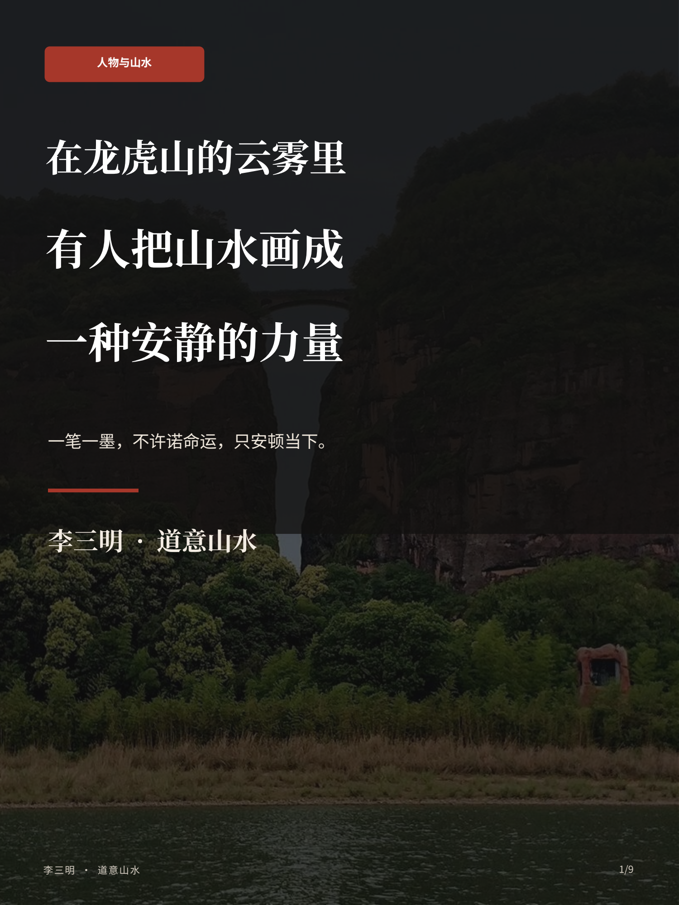
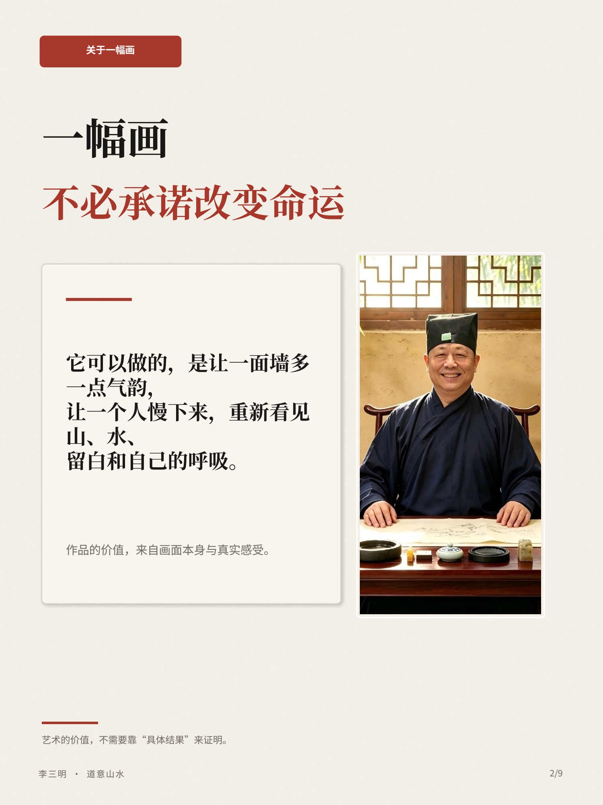
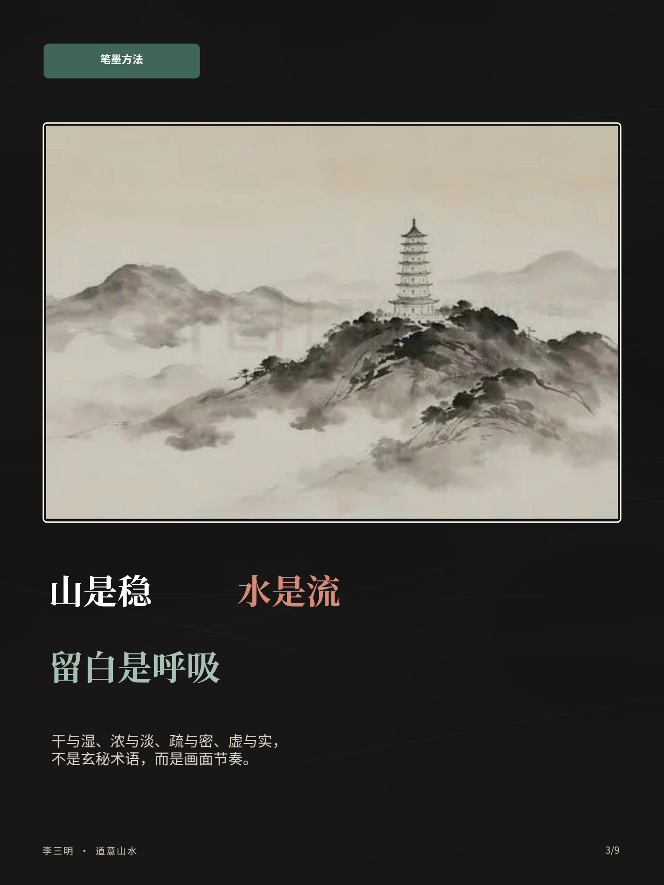
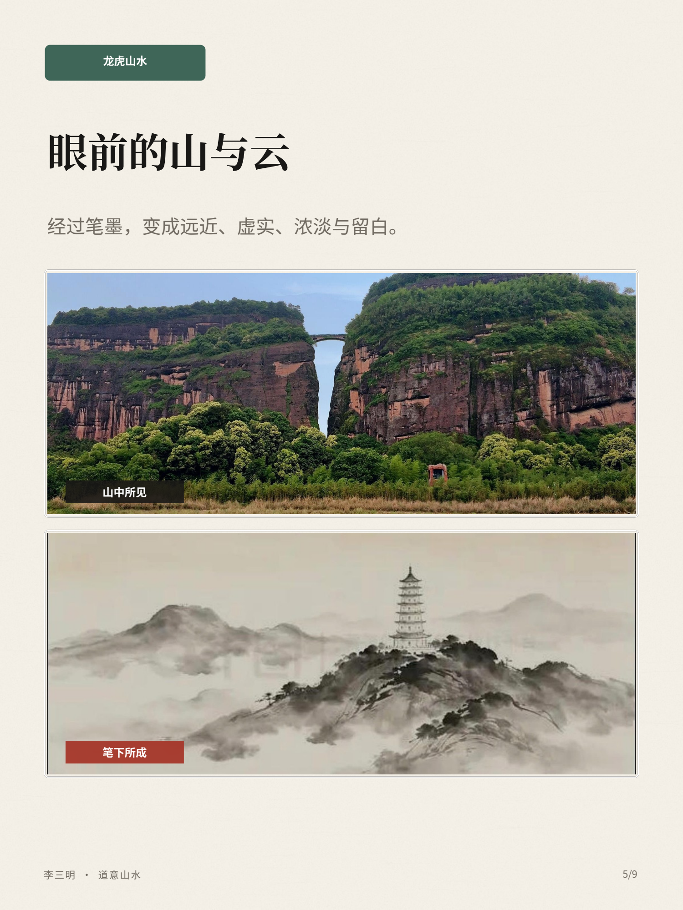
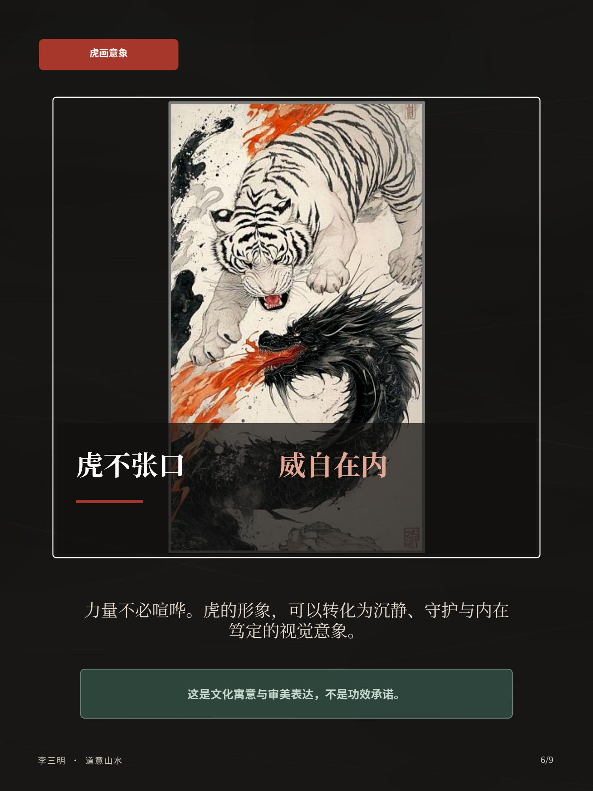
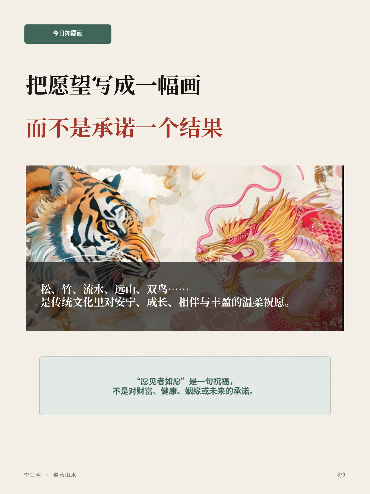
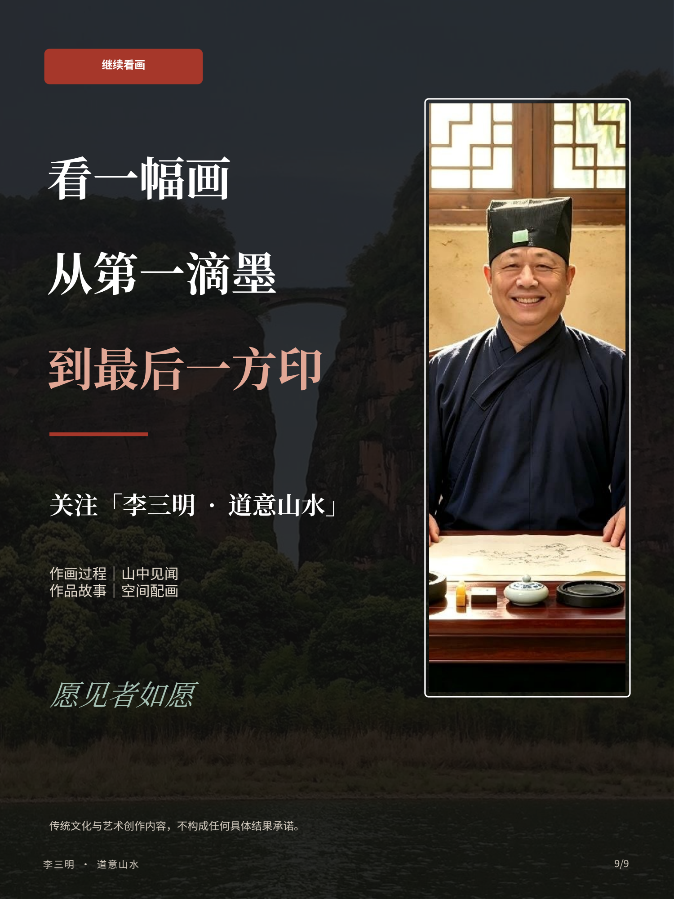

山水：看层次与留白
山石、远山、云气与塔影，共同组织前后关系。留意墨色如何从近处向远处变化，也留意画面没有画满的地方。
看山水笔墨页 →图文画册 · 笔墨与观看
九页图文画册，围绕山水笔墨、龙虎意象、创作叙事与空间配画展开。先读三个观看线索，再逐页看画。
山石、远山、云气与塔影，共同组织前后关系。留意墨色如何从近处向远处变化，也留意画面没有画满的地方。
看山水笔墨页 →将明暗、动势和局部色彩放在一起看。形体之间的距离和朝向，也会改变画面的紧张与舒缓。
看龙虎意象页 →把画框、墙面、家具和器物视为同一个画面。示意图供比较摆放关系，实际选择从真实空间的尺寸与光线出发。
看空间示意页 →以下保留完整图文画册；图下文字用于帮助阅读画面。

从山水、笔墨与当代生活进入项目的观看主题。

画册将目光放在气韵、留白与观看感受上。

近处山石较深，远山较淡；云雾与留白连接前后层次，塔影为观看提供落点。

以“入世有历练，山中有观照，笔下有山河”展开画册中的创作叙事。

将山景与山水画面并置，比较自然形态与画面中远近、浓淡的表达。

虎的浅色形体与龙的深色线条相互映照，暖色笔触穿过黑白关系。可以从眼神、走向与疏密观察画面的张力。

山水画、画框、长案与器物共同构成观看关系。本页为空间示意，不是客户实景案例。

以传统意象回应家人、新居、远行与同行者的心意。

从笔墨到题款与印章，了解画册所关注的创作内容。